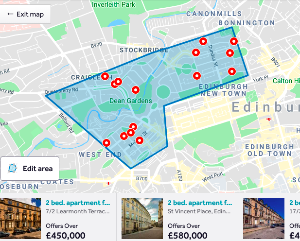

Many of us are looking for a new home. Even if we are not, we all have a friend or family member who enjoys “property porn” – browsing the homes for sale and imagining themselves the buyer. We do this by connecting to a property broker, just as astronomers connect to an event broker, to find what they want. Not just to find, but to get the new promptly, as soon as the property comes on the market, or as soon as the supernova explodes, as the case may be.
|  |
In the UK, one of the popular property brokers is rightmove.co.uk. You can build a custom search query, based on a location polygon, price, number of bedrooms, etc, and see all the available properties. You can sign in, and save the query you have created, so that every time you go to the website, you can run the query again and see if there is anything new. |
This is the “asking” way to get your update: run the query every so often, and pick through the results to see what is new. Rightmove offers another capability: the “listening” way to get updates. Once a query is saved, simply check a box and you will get email every time a suitable property comes on the market. Your query has been converted to a filter, that takes the stream of properties, and filters out the ones you want.
Thus streaming data is different from a database. The database is a fixed set of data, like an encyclopaedia, and when you make a selection query, you always get the same result. Astronomers learned 20 years ago to make databases and SQL part of their lives. But streaming data is like the property broker, where the content continuously changes.
You can (1) run your query and get all the results, consisting of both new properties and those you have already seen. (2) You can get notified whenever a new property comes up. Or (3) run the query, but only get new results, because the server remembers what it gave you before.
Lasair is an astronomical alert broker that offers the same capability. As with the property broker, you can build a query and save it, then check to box to make it a filter that delivers interesting alerts as soon as they are available.
Lasair queries can be built from the lightcurve of the object, or its position in the sky. For the lightcurve there are computed features and classifications derived from machine learning; from the sky position the associations with catalogue sources – is the alert in a galaxy or is it a variable star.
These can be combined by the user on a “query builder” based on SQL syntax. Users can upload a list of their sources of personal interest – a “watchlist” – and only alerts coincident with one of those will be delivered. Users can specify an area of interest – perhaps where their telescope can see, where a gravitational wave alert might be, or where an existing survey has covered, and only alerts in that area will be delivered.
Other alert brokers also offer filtered streams, with the filters and classifications chosen by the managers of the broker. There may be a process by which users can actually build their own stream, involving python code, pull requests, and a committee. But Lasair users can build their own query and its consequent stream directly from the web browser without permission from anyone. In the past, an astronomer would query the database with their morning coffee, and try to find the new ones – method (1) above. However, the modern astronomer checks the “streaming” box on their saved query in Lasair. This means that alerts that pass the filter are saved in a “digest” that is available on the web server; it also means that alerts can be delivered as in method (2). While email is available, for low-frequency streams, the “Kafka” protocol is more suitable for delivering alerts for further processing by machines.
Kafka implements method (3): the server remembers what it has delivered to you, through the mechanism of the “groupID”. Each stream is called a “topic”. Having yesterday read from a topic with a given groupID, and you read today, then you will get only the new alerts that have appeared on that topic since yesterday. You can run a program forever and pull the stream, or you can start the program periodically, and in both cases each alert is received exactly once. Of course, you can get everything in the topic by simply choosing a new groupID, and it will start at the beginning of its cache – generally about a week’s worth of the stream.
To run kafka, you will install some software (for example pip install confluent_kafka), then connect to kafka.lsst.ac.uk:9092. Lasair has a notebook with the details.
The email or kafka alert will have a link to the Lasair page corresponding to that object, showing the lightcurve and sky context, and links that give more information about the object, from the databases of the world. If you have a team, the alerts could be fed into a “marshal” so that different people can write comments and vote on whether telescopic follow-up is warranted. The streaming data can also be received by a tiny computer like a Raspberry Pi, and used to make a dynamic wall decoration of the alerts received, flashing a sparking with the most recent supernova candidates.
{kind=link}